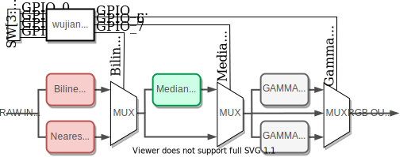

<!doctype html>
<html lang="en"><head><meta charset="utf-8"><meta name="viewport" content="width=device-width, initial-scale=1, maximum-scale=1"><meta><title>A Parallel Optimization Design for Demosaicing - Junzhuo</title><link rel="manifest" href="/manifest.json"><meta name="application-name" content="Junzhuo"><meta name="msapplication-TileImage" content="/img/favicon.svg"><meta name="apple-mobile-web-app-capable" content="yes"><meta name="apple-mobile-web-app-title" content="Junzhuo"><meta name="apple-mobile-web-app-status-bar-style" content="default"><meta name="description" content="SummaryVerilog，Modelsim, Quarus II, FPGA  使⽤ FPGA 实现去⻢赛克&amp;amp;中值滤波的硬件结构，使⽤ wujian100 作为控制模块  增加并⾏去⻢赛克模块节约了 40%的 Liner-Buffer（相较传统架构）           This article is also available in      简体中文."><meta property="og:type" content="blog"><meta property="og:title" content="A Parallel Optimization Design for Demosaicing"><meta property="og:url" content="https://junzhuo.me/Projects/A-Parallel-Optimization-Design-for-Demosaicing&amp;RISC-V-CPU-on-FPGA/"><meta property="og:site_name" content="Junzhuo"><meta property="og:description" content="SummaryVerilog，Modelsim, Quarus II, FPGA  使⽤ FPGA 实现去⻢赛克&amp;amp;中值滤波的硬件结构，使⽤ wujian100 作为控制模块  增加并⾏去⻢赛克模块节约了 40%的 Liner-Buffer（相较传统架构）           This article is also available in      简体中文."><meta property="og:locale" content="en_US"><meta property="og:image" content="https://junzhuo.me/images/Projects/A-Parallel-Optimization-Design-for-Demosaicing&amp;RISC-V-CPU-on-FPGA/half-flow.svg"><meta property="article:published_time" content="2021-11-27T12:54:28.547Z"><meta property="article:modified_time" content="2021-12-02T14:50:25.565Z"><meta property="article:author" content="Junzhuo Zhou"><meta property="article:tag" content="fpga"><meta property="article:tag" content="riscv"><meta property="twitter:card" content="summary"><meta property="twitter:image" content="/../../images/Projects/A-Parallel-Optimization-Design-for-Demosaicing&amp;RISC-V-CPU-on-FPGA/half-flow.svg"><script type="application/ld+json">{"@context":"https://schema.org","@type":"BlogPosting","mainEntityOfPage":{"@type":"WebPage","@id":"https://junzhuo.me/Projects/A-Parallel-Optimization-Design-for-Demosaicing&RISC-V-CPU-on-FPGA/"},"headline":"A Parallel Optimization Design for Demosaicing","image":[],"datePublished":"2021-11-27T12:54:28.547Z","dateModified":"2021-12-02T14:50:25.565Z","author":{"@type":"Person","name":"Junzhuo Zhou"},"description":"SummaryVerilog，Modelsim, Quarus II, FPGA  使⽤ FPGA 实现去⻢赛克&amp;中值滤波的硬件结构，使⽤ wujian100 作为控制模块  增加并⾏去⻢赛克模块节约了 40%的 Liner-Buffer（相较传统架构）           This article is also available in      简体中文."}</script><link rel="canonical" href="https://junzhuo.me/Projects/A-Parallel-Optimization-Design-for-Demosaicing&amp;RISC-V-CPU-on-FPGA/"><link rel="icon" href="/img/favicon.svg"><link rel="stylesheet" href="https://use.fontawesome.com/releases/v5.12.0/css/all.css"><link rel="stylesheet" href="https://cdn.jsdelivr.net/npm/highlight.js@9.12.0/styles/atom-one-light.css"><link rel="stylesheet" href="https://fonts.googleapis.com/css2?family=Ubuntu:wght@400;600&amp;family=Source+Code+Pro"><link rel="stylesheet" href="/css/default.css"><style>body>.footer,body>.navbar,body>.section{opacity:0}</style><!--!--><!--!--><!--!--><!--!--><link rel="stylesheet" href="https://cdn.jsdelivr.net/npm/lightgallery@1.6.8/dist/css/lightgallery.min.css"><link rel="stylesheet" href="https://cdn.jsdelivr.net/npm/justifiedGallery@3.7.0/dist/css/justifiedGallery.min.css"><!--!--><!--!--><!--!--><script src="https://cdn.jsdelivr.net/npm/pace-js@1.0.2/pace.min.js"></script><!--!--><!--!--><meta name="generator" content="Hexo 5.4.0"></head><body class="is-3-column"><nav class="navbar navbar-main"><div class="container"><div class="navbar-brand justify-content-center"><a class="navbar-item navbar-logo" href="/"></a></div><div class="navbar-menu"><div class="navbar-start"><a class="navbar-item" href="/News">News</a><a class="navbar-item" href="/Publications">Publications</a><a class="navbar-item" href="/Projects">Projects</a><a class="navbar-item" href="/Blogs">Blogs</a></div><div class="navbar-end"><a class="navbar-item" rel="noopener" title="MyCV" href="/MyCV">MyCV</a><a class="navbar-item is-hidden-tablet catalogue" title="Catalogue" href="javascript:;"><i class="fas fa-list-ul"></i></a><a class="navbar-item search" title="Search" href="javascript:;"><i class="fas fa-search"></i></a></div></div></div></nav><section class="section"><div class="container"><div class="columns"><div class="column order-2 column-main is-8-tablet is-8-desktop is-9-widescreen"><div class="card"><div class="card-image"><span class="image is-7by3"></span></div><article class="card-content article" role="article"><div class="article-meta is-size-7 is-uppercase level is-mobile"><div class="level-left"></div></div><h1 class="title is-3 is-size-4-mobile">A Parallel Optimization Design for Demosaicing</h1><div class="article-tags is-size-7 mb-4"><span class="mr-2">#</span><a class="link-muted mr-2" rel="tag" href="/Tags/fpga/">fpga</a><a class="link-muted mr-2" rel="tag" href="/Tags/riscv/">riscv</a></div><div class="content"><hr>
<h2 id="Summary"><a href="#Summary" class="headerlink" title="Summary"></a>Summary</h2><p><code>Verilog，Modelsim, Quarus II, FPGA</code></p>
<ul>
<li><p>使⽤ FPGA 实现去⻢赛克&amp;中值滤波的硬件结构，使⽤ wujian100 作为控制模块</p>
</li>
<li><p>增加并⾏去⻢赛克模块节约了 40%的 Liner-Buffer（相较传统架构）</p>
</li>
</ul>
<article class="message message-immersive is-primary">
  <div class="message-body">
    <i class="fas fa-globe-asia mr-2"></i>This article is also available in 
    <a href="/cn/项目/基于FPGA的实时Biliner去⻢赛克设计/">简体中文</a>.
  </div>
</article>

<span id="more"></span>
<hr>
<h2 id="Background"><a href="#Background" class="headerlink" title="Background"></a>Background</h2><p></p>
<p>Bilinear是比较常见的Demosaicing算法。当我们先做Demosaicing再做中值滤波时，由于rwa2rgb过程会使数据信息密度降低(10bit raw -&gt; 3*8bit rgb)，采用3组Demosaicing算子并行运算可以<strong>减少40% Liner-Buffer使用</strong>。</p>
<hr>
<h2 id="Main-Idea"><a href="#Main-Idea" class="headerlink" title="Main Idea"></a>Main Idea</h2><h3 id="Liner-Buffer-Architecture"><a href="#Liner-Buffer-Architecture" class="headerlink" title="Liner-Buffer Architecture"></a>Liner-Buffer Architecture</h3><p><br>通过6组同步RAM实现5组异步Line-Buffer</p>
<hr>
<h3 id="Demosaicing-Architecture"><a href="#Demosaicing-Architecture" class="headerlink" title="Demosaicing Architecture"></a>Demosaicing Architecture</h3><p></p>
<ul>
<li>使用5x3的Demosaicing-Mask，将其拆分为3个3x3的Mask(数据复用的思想)分别输入到3个并行的Demosaicing模块中。</li>
<li>输出的3个rgb数据分别进入中值滤波器中，与相邻时钟进入的数据一起进行3x3的中值滤波。</li>
</ul>
<hr>
<h3 id="Implementation-of-RISC-V-CPU"><a href="#Implementation-of-RISC-V-CPU" class="headerlink" title="Implementation of RISC-V CPU"></a>Implementation of RISC-V CPU</h3><p></p>
<p>本次project我们使用集成了<strong>RISC-V CPU</strong>的SoC(wujian100)进行模块控制</p>
<hr>
<h3 id="Overview-amp-Pipeline"><a href="#Overview-amp-Pipeline" class="headerlink" title="Overview &amp; Pipeline"></a>Overview &amp; Pipeline</h3><p></p>
<p></p>
<p>加入pipeline设计，用少量的buffer的代价实现<strong>低能耗</strong></p>
<hr>
<h2 id="Outcome"><a href="#Outcome" class="headerlink" title="Outcome"></a>Outcome</h2><p>Comparation of Line-Buffer size between <strong>Tradition</strong> and <strong>Parallel</strong> algorithm</p>
<table>
<thead>
<tr>
<th align="center">Line-Buffer size</th>
<th align="center">Tradition</th>
<th align="center">Parallel</th>
</tr>
</thead>
<tbody><tr>
<td align="center">Demosacing</td>
<td align="center">4 of 10bit*W</td>
<td align="center">4 of 10bit*W</td>
</tr>
<tr>
<td align="center">Median Filter</td>
<td align="center">2 of 30bit*W</td>
<td align="center">2 of 10bit*W</td>
</tr>
<tr>
<td align="center">Totally</td>
<td align="center">100bit*W</td>
<td align="center">60bit*W</td>
</tr>
</tbody></table>
<p>新的设计节约了40%的寄存器开销</p>
</div><div class="sharethis-inline-share-buttons"></div><script src=" " defer></script></article></div><!--!--><!--!--></div><div class="column column-left is-4-tablet is-4-desktop is-3-widescreen  order-1 is-sticky"><div class="card widget" data-type="profile"><div class="card-content"><div class="level-item has-text-centered flex-shrink-1"><div><p class="title is-size-4 is-block" style="line-height:inherit;">Junzhuo Zhou</p><p class="is-size-6 is-block">HaoYu lab, SUSTech</p></div></div><div class="level is-mobile is-multiline"><a class="level-item button is-transparent is-marginless" target="_blank" rel="noopener" title="Email" href="mailto:zhou@junzhuo.me"><i class="fa fa-envelope"></i></a><a class="level-item button is-transparent is-marginless" target="_blank" rel="noopener" title="Google-Scholar" href="https://scholar.google.com/citations?hl=en&amp;user=Rae-5RYAAAAJ"><i class="fa fa-graduation-cap"></i></a><a class="level-item button is-transparent is-marginless" target="_blank" rel="noopener" title="Github" href="https://github.com/zao111222333"><i class="fab fa-github"></i></a></div></div></div><div class="card widget" id="toc" data-type="toc"><div class="card-content"><div class="menu"><h3 class="menu-label">Catalogue</h3><ul class="menu-list"><li><a class="level is-mobile" href="#Summary"><span class="level-left"><span class="level-item">1</span><span class="level-item">Summary</span></span></a></li><li><a class="level is-mobile" href="#Background"><span class="level-left"><span class="level-item">2</span><span class="level-item">Background</span></span></a></li><li><a class="level is-mobile" href="#Main-Idea"><span class="level-left"><span class="level-item">3</span><span class="level-item">Main Idea</span></span></a><ul class="menu-list"><li><a class="level is-mobile" href="#Liner-Buffer-Architecture"><span class="level-left"><span class="level-item">3.1</span><span class="level-item">Liner-Buffer Architecture</span></span></a></li><li><a class="level is-mobile" href="#Demosaicing-Architecture"><span class="level-left"><span class="level-item">3.2</span><span class="level-item">Demosaicing Architecture</span></span></a></li><li><a class="level is-mobile" href="#Implementation-of-RISC-V-CPU"><span class="level-left"><span class="level-item">3.3</span><span class="level-item">Implementation of RISC-V CPU</span></span></a></li><li><a class="level is-mobile" href="#Overview-amp-Pipeline"><span class="level-left"><span class="level-item">3.4</span><span class="level-item">Overview &amp; Pipeline</span></span></a></li></ul></li><li><a class="level is-mobile" href="#Outcome"><span class="level-left"><span class="level-item">4</span><span class="level-item">Outcome</span></span></a></li></ul></div></div><style>#toc .menu-list > li > a.is-active + .menu-list { display: block; }#toc .menu-list > li > a + .menu-list { display: none; }</style><script src="/js/toc.js" defer></script></div></div><!--!--></div></div></section><footer class="footer"></footer><script src="https://cdn.jsdelivr.net/npm/jquery@3.3.1/dist/jquery.min.js"></script><script src="https://cdn.jsdelivr.net/npm/moment@2.22.2/min/moment-with-locales.min.js"></script><script src="https://cdn.jsdelivr.net/npm/clipboard@2.0.4/dist/clipboard.min.js" defer></script><script>moment.locale("en");</script><script>var IcarusThemeSettings = {
            article: {
                highlight: {
                    clipboard: true,
                    fold: 'unfolded'
                }
            }
        };</script><script src="/js/column.js"></script><script src="/js/animation.js"></script><a id="back-to-top" title="Back to top" href="javascript:;"><i class="fas fa-chevron-up"></i></a><script src="/js/back_to_top.js" defer></script><!--!--><!--!--><!--!--><script src="https://cdn.jsdelivr.net/npm/lightgallery@1.6.8/dist/js/lightgallery.min.js" defer></script><script src="https://cdn.jsdelivr.net/npm/justifiedGallery@3.7.0/dist/js/jquery.justifiedGallery.min.js" defer></script><script>window.addEventListener("load", () => {
            if (typeof $.fn.lightGallery === 'function') {
                $('.article').lightGallery({ selector: '.gallery-item' });
            }
            if (typeof $.fn.justifiedGallery === 'function') {
                if ($('.justified-gallery > p > .gallery-item').length) {
                    $('.justified-gallery > p > .gallery-item').unwrap();
                }
                $('.justified-gallery').justifiedGallery();
            }
        });</script><!--!--><!--!--><script type="text/x-mathjax-config">MathJax.Hub.Config({
            'HTML-CSS': {
                matchFontHeight: false
            },
            SVG: {
                matchFontHeight: false
            },
            CommonHTML: {
                matchFontHeight: false
            },
            tex2jax: {
                inlineMath: [
                    ['$','$'],
                    ['\\(','\\)']
                ]
            }
        });</script><script src="https://cdn.jsdelivr.net/npm/mathjax@2.7.5/unpacked/MathJax.js?config=TeX-MML-AM_CHTML" defer></script><!--!--><!--!--><!--!--><script src="/js/main.js" defer></script><div class="searchbox"><div class="searchbox-container"><div class="searchbox-header"><div class="searchbox-input-container"><input class="searchbox-input" type="text" placeholder="Type something..."></div><a class="searchbox-close" href="javascript:;">×</a></div><div class="searchbox-body"></div></div></div><script src="/js/insight.js" defer></script><script>document.addEventListener('DOMContentLoaded', function () {
            loadInsight({"contentUrl":"/content.json"}, {"hint":"Type something...","untitled":"About Me","posts":"Posts","pages":"Pages","categories":"Categories","tags":"Tags"});
        });</script></body></html>